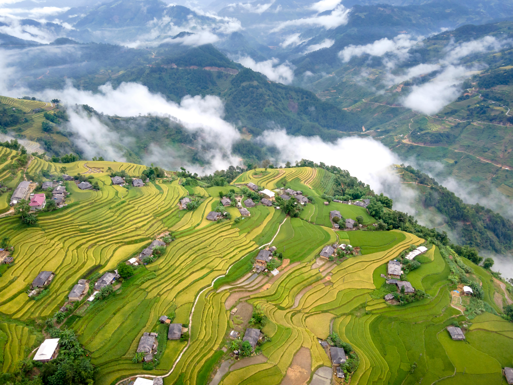
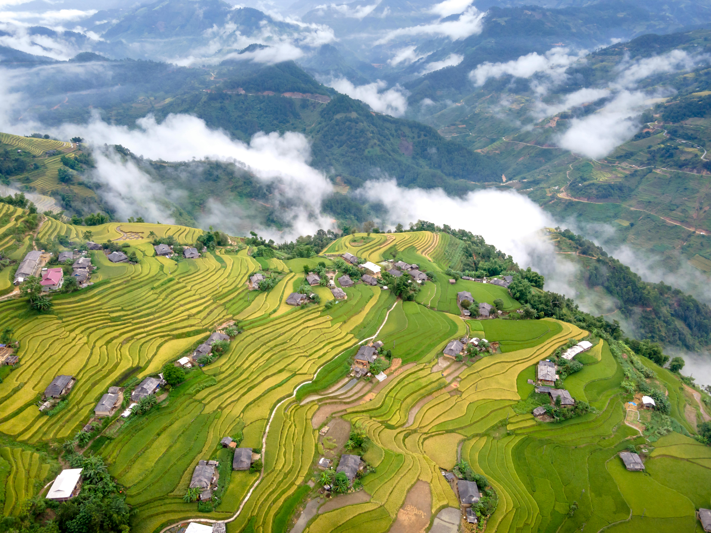

When it comes to breathtaking landscapes, nothing quite compares to the rice terraces of Hmong Village in Sapa, Vietnam. Tucked away in the northern region of the country, this stunning destination boasts some of the most impressive agricultural creations in the world. The rice terraces of Hmong Village are a true testament to the skill and determination of the local farmers who have been maintaining the land for centuries. From high up above, the rice fields create a unique and beautiful pattern that is truly awe-inspiring. A hidden gem waiting to be explored, the rice terraces of Hmong Village should be on every traveler’s must-visit list.Black Hmong, Red Hmong, Flower Hmong, Green Hmong, Striped Hmong and even Variegated Hmong – we saw them all during our Vietnam tour. Perhaps the names are a legacy of the profusion of seriously retina-shattering colors the people were wearing, and then the sub-groups of all of these. Sapa is like that – even in April! Thousands of terraces that the Hmong have carved into the steep sides of the mountains stretch out into the horizon in every direction you turn. These have not yet been planted with the green shoots of rice that will transform the region into a carved verdigris bowl for seven months of the year.